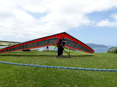
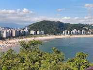

HISTORIA
A data de fundação de São Vicente, 22 de janeiro de 1532, marcou a chegada de Martim Afonso de Souza ao sudoeste da ilha de mesmo nome, chamada pelos índios de Engaguaçu (do tupi-guarani, “baía-grande”).
Inúmeras referências históricas, entretanto, assinalaram a presença de um povoado anterior, próximo ao porto conhecido por Tumiaru, que em tupi-guarani significa “fogo solitário ou farol”, alusão ao costume europeu de acender uma fogueira para orientar as embarcações que se aproximavam de um porto.
Alguns membros das tripulações estabeleceram-se nesse antigo povoado de São Vicente, como Gonçalo da Costa, Mestre Cosme Fernandes, João Ramalho, entre outros.

DICAS TURISTICAS
Teleférico de São Vicente. Liga a Praia do Itararé ao topo do Morro do Voturuá em um trajeto de cerca de 700 metros sobre a Mata Atlântica. No alto, há um mirante com vista de 360 graus para Santos e São Vicente, além de rampa de decolagem de voo livre. Horários e tarifas podem ser consultados no site do Teleférico de São Vicente.

Ilha Porchat e Mirante Niemeyer. Conectada ao continente por uma ponte na divisa entre as praias do Itararé e Milionários, a ilha abriga o Memorial dos 500 Anos, projetado por Oscar Niemeyer. O mirante oferece uma das melhores vistas panorâmicas de toda a orla vicentina e santista.
